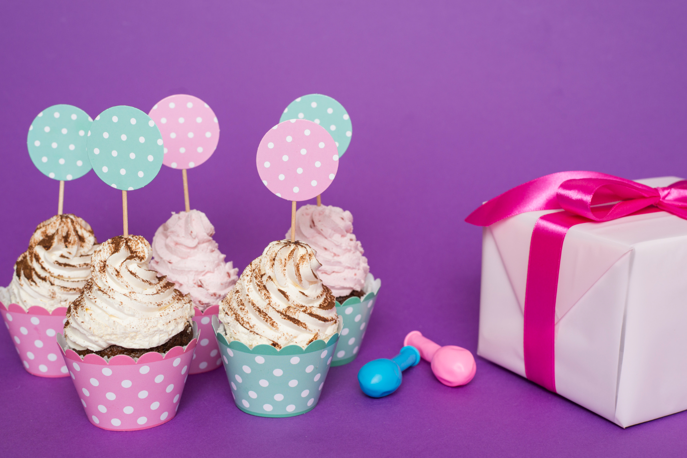

Catering
At Toronto Cupcake, we believe every celebration deserves a sweet touch. Our beautifully crafted, delicious cupcakes are perfect for any occasion—whether it’s an elegant wedding, a fun-filled birthday party, or a corporate event. We work with you to customize every detail, from flavors and colors to intricate designs that reflect your event’s unique theme.
Our services go beyond just cupcakes. We offer cupcake stand rentals to create stunning displays that are sure to impress your guests, and for those looking for something one-of-a-kind, we even build custom cupcake stands tailored to your vision. Whether you’re hosting an intimate gathering or a grand event, we’re here to make your celebration unforgettable with cupcakes that are as delightful to look at as they are to eat.
No matter the occasion, Toronto Cupcake is dedicated to providing sweet creations that elevate your event. From weddings and engagement parties to graduations and baby showers, let us bring a little sweetness to your special day.
Select Your Occasion
Weddings
Your wedding is a day to be cherished forever, and our cupcakes are designed to add an extra layer of sweetness to the celebration. Whether you're looking for classic elegance or modern flair, we work with you to create cupcakes that match your wedding's theme and colors. From intricate floral designs to cupcakes adorned with the bride and groom’s initials, every detail is customized to make your big day even more special. Let us help you create a beautiful cupcake display that complements your style, with rental stands available to ensure the presentation is as stunning as the cupcakes themselves.
Birthdays
Celebrate your birthday with a delightful assortment of themed cupcakes that will leave your guests talking. Whether you're hosting a children’s party with fun characters like Cookie Monster and Elmo or celebrating a milestone birthday with elegant designs, we can customize the flavors, colors, and decorations to suit your style. Our cupcakes are the perfect way to mark any birthday, and our cupcake stands will turn them into the centerpiece of your party. Add a personalized touch with custom messages or decorations that reflect the birthday theme.
Engagement parties
An engagement party is a time to celebrate love and the beginning of a new journey. Our custom cupcakes bring sweetness to the celebration, with designs that capture the joy of the occasion. From elegant cupcakes featuring engagement rings to personalized treats that tell your love story, we make sure every detail reflects your unique relationship. Pair our beautiful cupcakes with a display stand to create an unforgettable centerpiece for your engagement party.
Anniversaires
Mark your anniversary with personalized cupcakes that tell the story of your journey together. Whether you’re celebrating your first anniversary or your fiftieth, our cupcakes are designed to reflect your love and the memories you've shared. Choose from romantic designs, custom flavors, and beautiful cupcake displays that add elegance to your celebration. Our team works with you to create a display that complements the tone of your event, ensuring your special day is unforgettable.
Graduations
Graduations are milestones worth celebrating, and our custom cupcakes add the perfect sweet touch to your event. Whether you want cupcakes adorned with graduation caps, diplomas, or school colors, we can design treats that honor your achievement. Our cupcakes are ideal for family gatherings, school celebrations, or graduation parties, and with our stand rentals, you can create a stunning display that will impress your guests and showcase your success.
Holidays
Make your holiday celebrations even more festive with custom holiday cupcakes from Toronto Cupcake. Whether you're hosting a Christmas party, celebrating Halloween, or looking for the perfect Easter treat, we offer seasonal designs that bring joy to any gathering. Our cupcakes are made with premium ingredients and decorated with holiday themes like snowflakes, pumpkins, and Easter eggs, making them the perfect addition to family get-togethers, office parties, or community events.
Baby Showers
Celebrate the joy of a new arrival with our adorable baby shower cupcakes. We offer custom designs that match your baby shower’s theme, whether you’re expecting a boy, a girl, or keeping it a surprise. Our cupcakes can be decorated with baby booties, rattles, or personalized messages to make the day extra special. With a wide range of flavors and colors to choose from, Toronto Cupcake can help you create a display that will wow your guests and add sweetness to this memorable occasion.
Corporate
From small gatherings to large-scale corporate events, our custom cupcakes make a statement. We work closely with you to reproduce logos and designs on edible fondant, ensuring that your brand shines through. Our expertise in creating themed cupcakes means we can craft the perfect desserts for client appreciation events, marketing campaigns, and internal celebrations. With our custom logo cupcakes, you can turn any occasion into a memorable brand experience.